1337core
- ZTEdevice.com – Open Redirect, Risiko: Gering. http://www.ztedevice.com/redirect.html?u=http://www.1337core.de
- Postbank.de – Redirect Filter Bypass (z.B. Weiterleitung auf Phishing), Risiko: Mittel. https://www.postbank.de/dienste/redirect/servlet.html?url=http://www.postbank.de.www.1337core.de
- Freenet.de – rXSS, Open Redirect, Risiko: Niedrig.
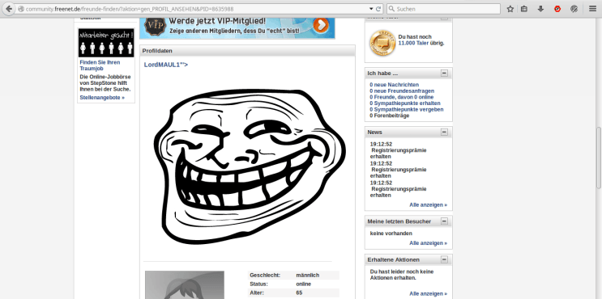
-
Conrad.de – Persistent Cross Site Scripting (https://www.conrad.de/ce/de/ShoppingList.html),
Risiko: Niedrig/Mittel (Phishing, embedded Malware).
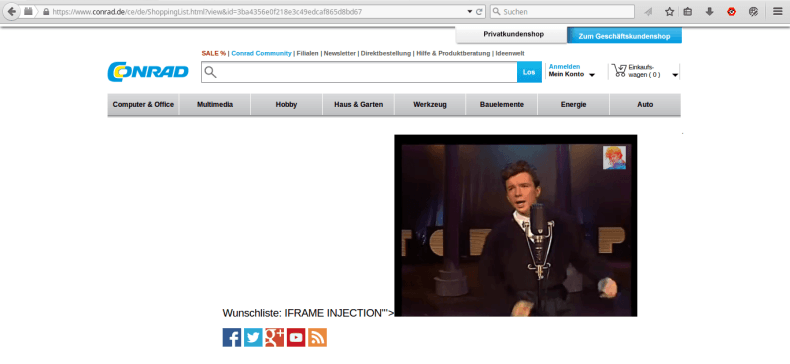
- Transfermarkt.de – Persistent Cross Site Scripting in User-Wall (http://www.transfermarkt.de/alexandion/wall/meintm?user_id=610654),
Risiko: Mittel (z.B. Wurm, Cookie Stealing, Redirecting, Phishing)
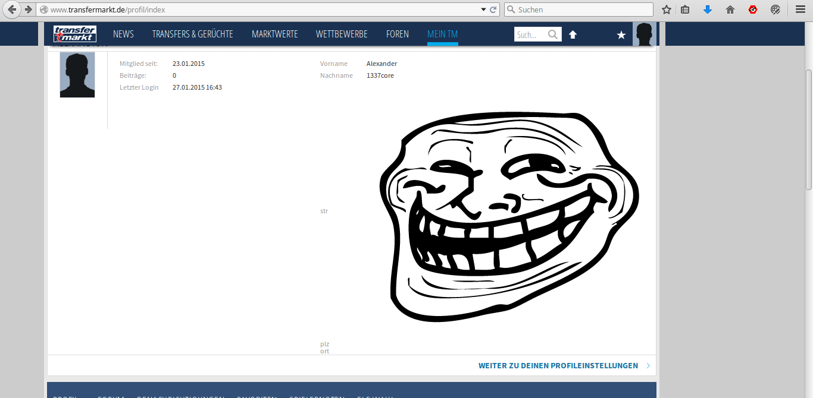
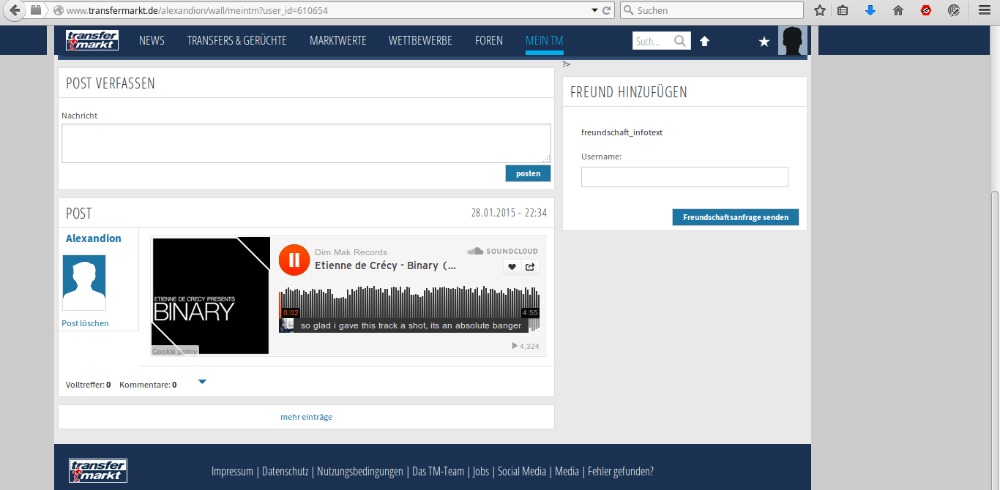
- Arcor.de – rXSS (https://www.arcor.de/login/sso_err_no_webbill.jsp?errortext=XSS) Risiko: Niedrig (z.B. Cookie
Stealing)
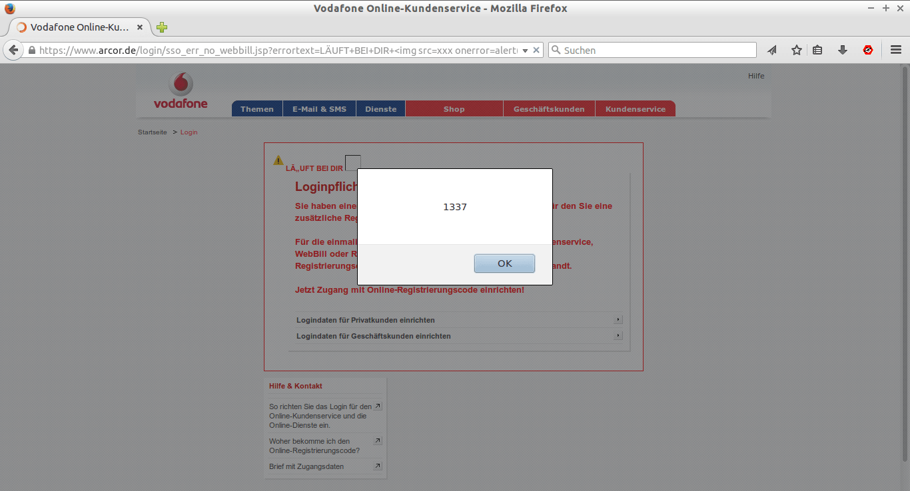
- Chip.de – Open Redirect (http://x.chip.de/intern/dl/?url=http%3A%2F%2Fwww.1337core.de/) Risiko: Niedrig (z.B. Phishing)
- Ferrero – Open Redirect (http://www.ferrero.de/redirect.aspx?url=http%3a%2f%2fwww.1337core.de). Riskio: Niedrig (z.B. Phishing)
-
T3N Magazin – Persistent Cross Site Scripting, Risiko: Mittel (Cookie Stealing)
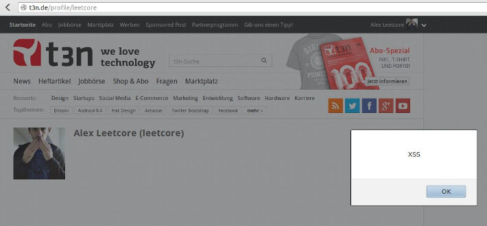
- Zeit Online Leserartikel – Persistent Cross Site Scripting, Risiko: Mittel (Cookie Stealing)
- National Center EDU Research – SQL Injection, Risiko: Hoch, Advisory. (Datenbank, Server)
- Firewall Analyzer, Persistent Cross Site Scripting, Risiko: Mittel, Livehacking.
- Samsung.com, Weiterleitung ohne Prüfung, Risiko: Niedrig, Livehacking. (Phishing)
- Nokia.de, Persistent Cross Site Scripting, Risiko: Mittel, Livehacking. (Cookie Stealing)
- Super Bowl Webseite, mehrere SQL Injection, Risiko: Hoch. Ein andere Hacker entdeckte einen der Fehler, veröffentlichte die Datenbank und hatte Zugriff auf den Server. Advisory.
-
OSCommerce 3.0.2 (Shopsoftware), Persistant XSS, Risiko:
Mittel. Advisory.
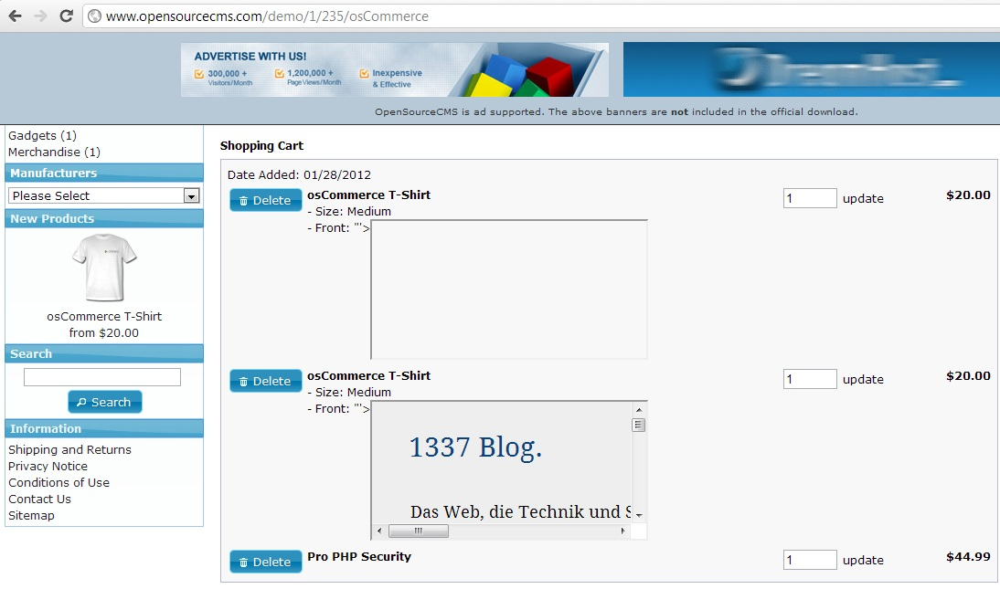
-
DasDing (Radio-Community. Gruppe und Profil), Persistant XSS, Risiko: Mittel, Screenshot.
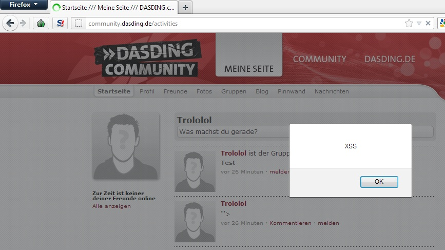
- meinsol.de (Persistant Cross Sitescripting) Demo
- UN-Sekretariat(Akiva Webboard 8.x) SQL Injection + Plaintext Password, Risiko: Hoch. Exploit-DB, Security Focus.
-
Bundesregierung Webseite, (Reflexive XSS), Risiko: Niedrig. Screenshot.
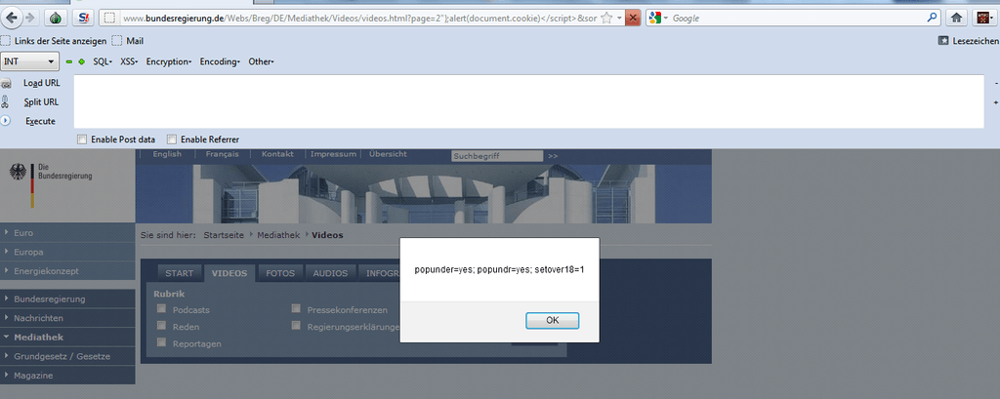
-
Bundeskanzlerin Webseite, (Reflexive XSS), Risiko: Niedrig. Screenshot.
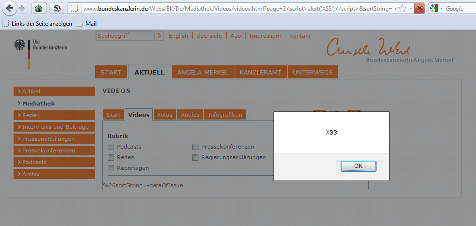
- Europäische Kommission, (Persistant XSS – Cross Site Script), Risiko: Mittel. Screenshot.
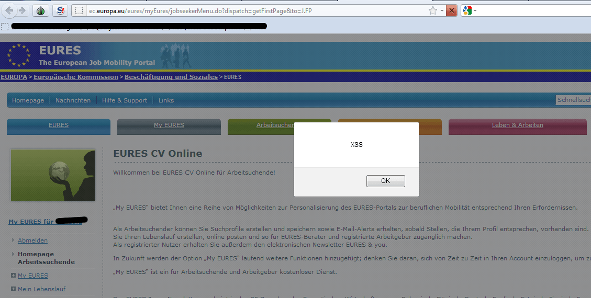
-
Whitehouse Government Petition System, (Persistant Cross Site Scripting), Risiko: Mittel, Demo-Video, Presse.
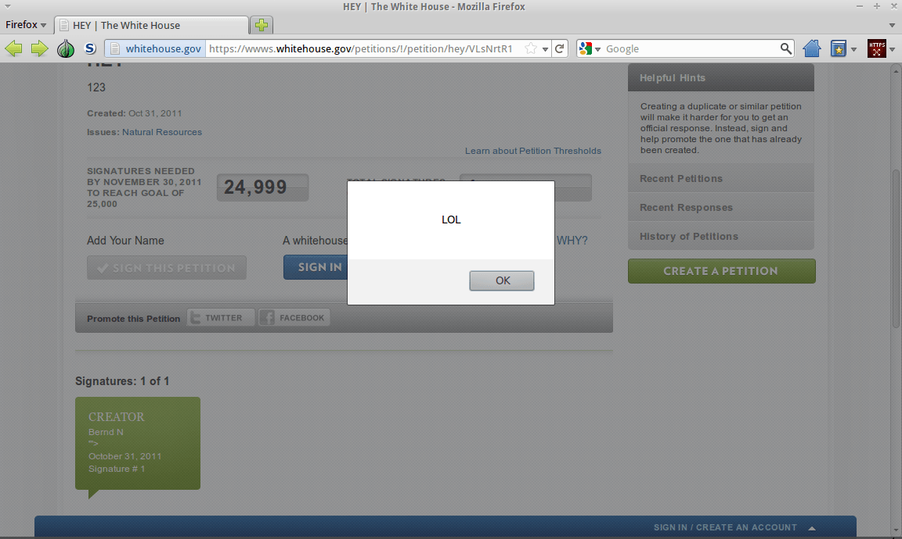
-
NATO Research and Technology, (Local File Inclusion), Risiko: Hoch, Demo-Video, Interview.
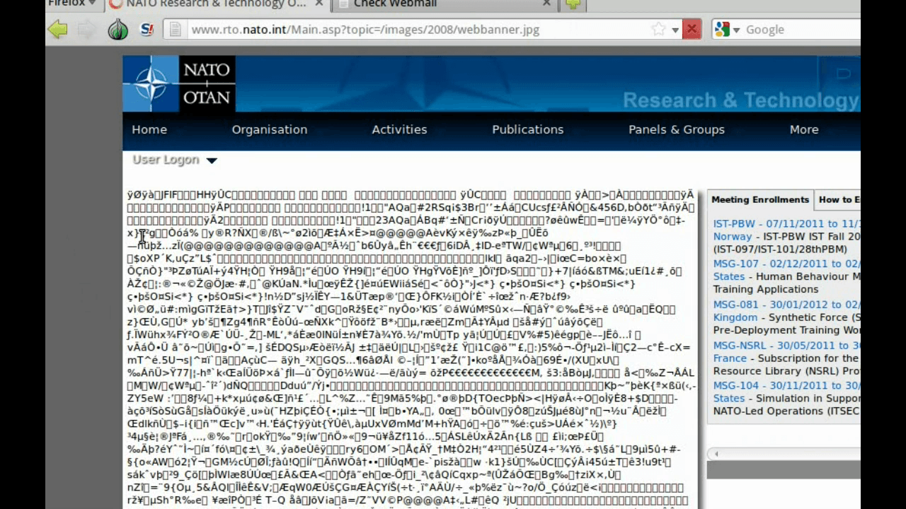
-
Prosieben Community, (Persistant Cross Site Scripting), Risiko: Mittel.
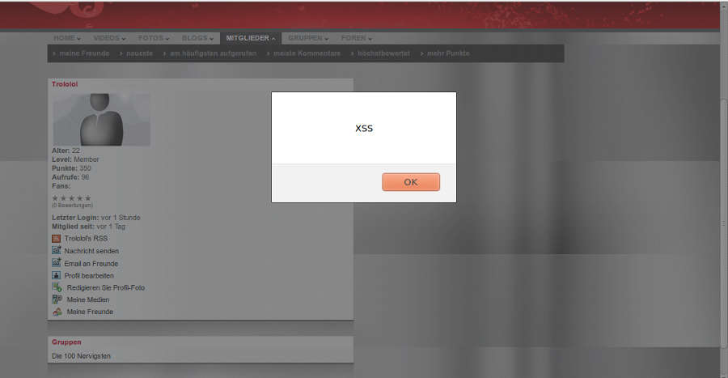
- Apple.com Errormessage, (Reflexives XSS – Cross Site Script), Risiko: Mittel.
Presse,
Hall of Fame.
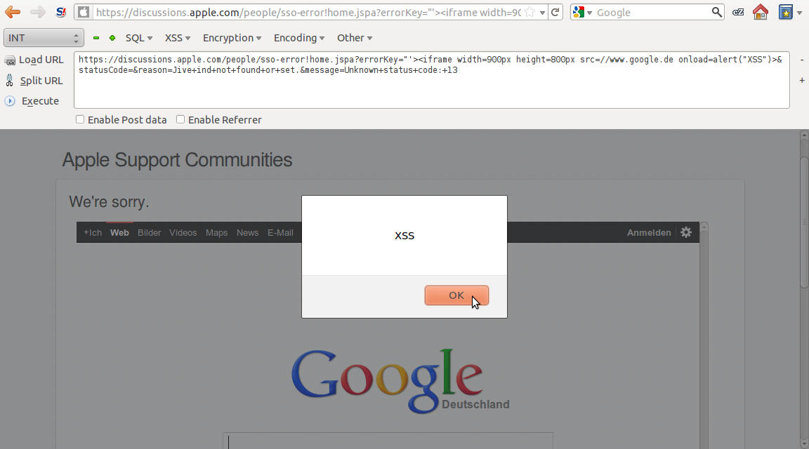
- Laposte.fr Post, (Local File Inclusion + SQL Injection),
Risiko: Hoch, Advisory.
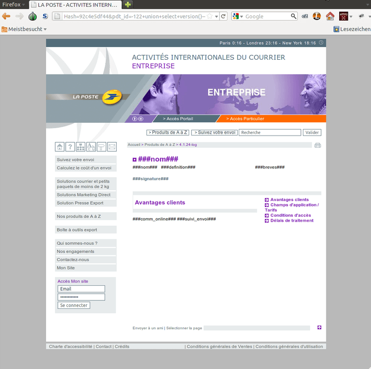
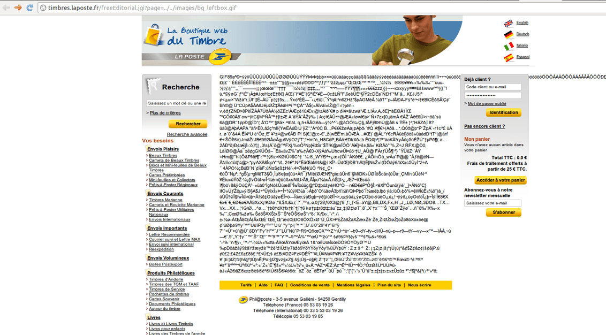
- notebooksbilliger Forum, (Persistant XSS – Cross Site Script), Risiko: Mittel, Advisory. Danke für den Gutschein. :-)
- RTL Community, (Persistant XSS – Cross Site Script), Risiko: Mittel, Advisory, Presse: Spiegel, Süddeutsche.
- bundestag.de, (Reflexives Cross Site Script), Risiko: Niedrig.
- Microsoft Academic Search, (Reflexives Cross Site Script), Risiko: Mittel.
Hall of Fame.
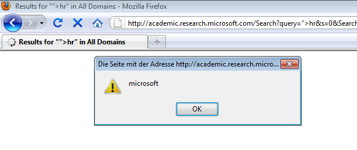
- TV Total Community, (SQL Injection + Reflexives Cross Site
Script), Risiko: Hoch. Danke für die Freikarten. :-)
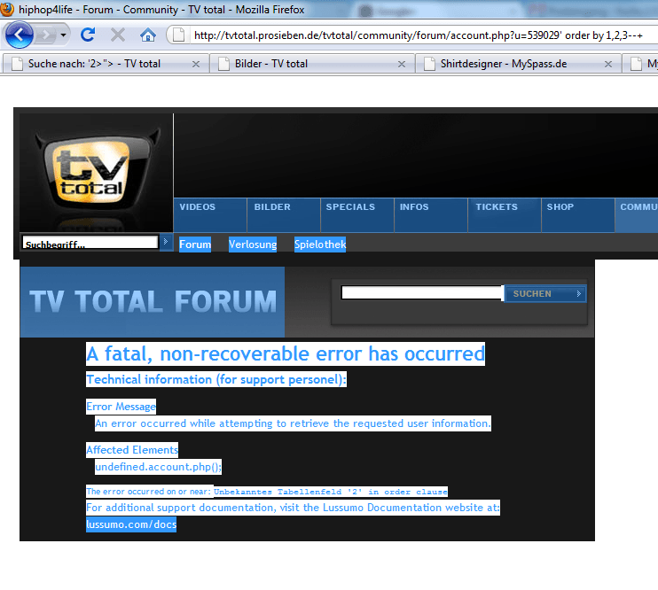
- europa-union.de, (Reflexives Cross Site Script), Risiko: Niedrig.
- gema.de, (Reflexives Cross Site Script), Risiko: Niedrig.
- btg-bestellservice.de, (Reflexives Cross Site Script + SQL Injection), Risiko: Hoch.
- Bild.de, (Reflexives Cross Site Script + SQL Injection) Risiko: Hoch.
- dp-dhl.com, (Reflexives Cross Site Script), Risiko: Niedrig.
- t-mobile.de, (Reflexives Cross Site Script), Risiko: Niedrig.
- nato-pa.int, (Reflexives Cross Site Script), Risiko: Niedrig.
- deutschebahn.com, (Reflexives Cross Site Script), Risiko: Niedrig.
- regionalverband-saarbruecken.de, (Reflexives Cross Site Script), Risiko: Niedrig.
- europarl.de, (Reflexives Cross Site Script), Risiko: Niedrig.
- europarl.europa.eu auf der Präsidenten-Seite, (Reflexives Cross Site Script), Risiko: Niedrig.